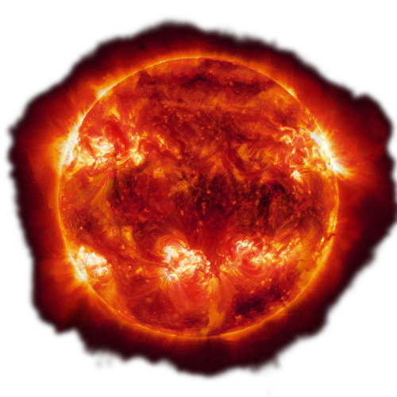
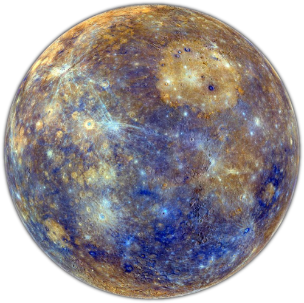
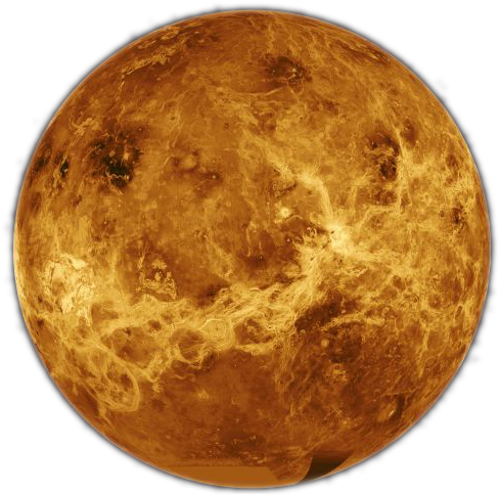
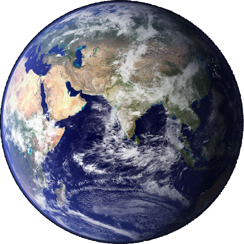
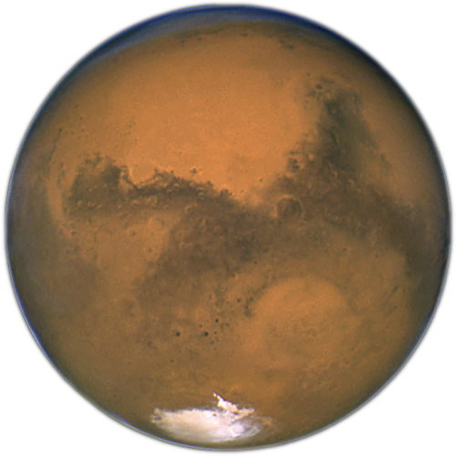
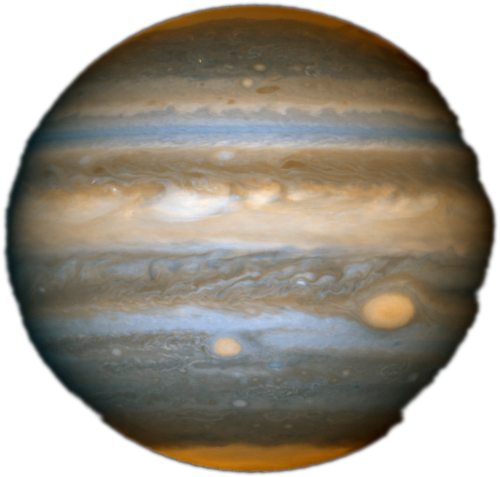
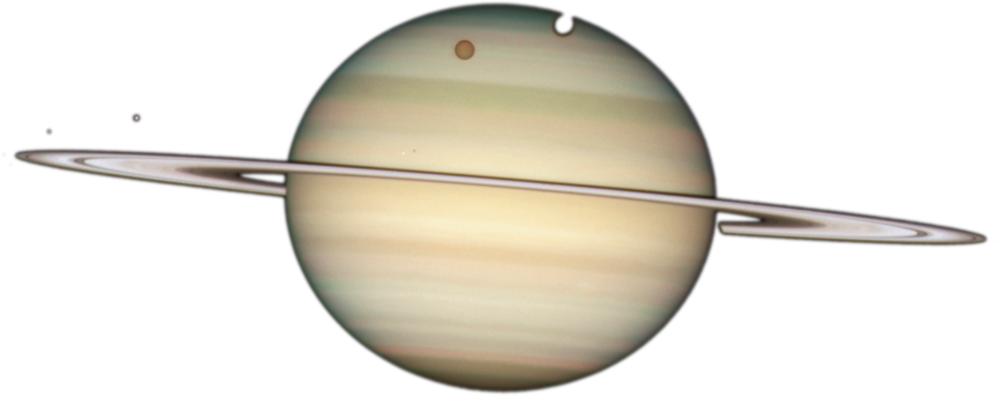
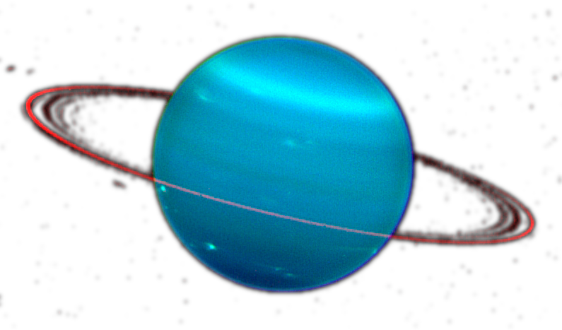
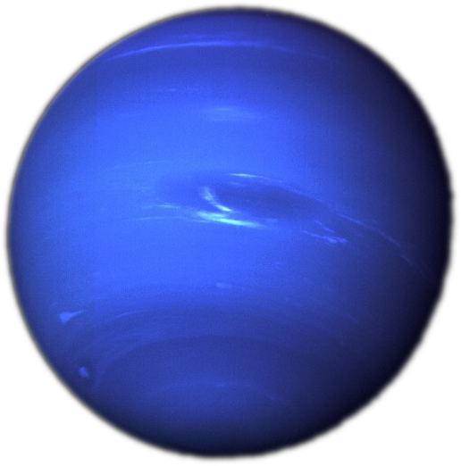

Our Planets
A impress.js presentation
Wojciech Michalak
The Solar System
The
Solar System consists of:
- The Sun
- eight planets
- their moons
- other non-stellar objects
It formed 4.6 billion years ago from the gravitational collapse of a giant molecular cloud.

Mercury

Closest planet to the Sun.
Smallest planet in the Solar System.
Namesake: Messenger of the Roman Gods
Orbit Size (semi-major axis): 57,909,227 km
Mean Radius: 2,439.7 km
Volume: 60,827,208,742 km3
Mass: 330,104,000,000,000,000,000,000 kg
Venus

Close in size to Earth.
It is the hottest planet 400°C
Namesake: Roman goddess of love and beauty.
Orbit Size (semi-major axis): 108,209,475 km
Mean Radius: 6,051.8 km
Volume: 928,415,345,893 km3
Mass: 4,867,320,000,000,000,000,000,000 kg
Earth

Estimated to be 4.5 billion years old.
It travels through space at 660,000 miles per hour.
It travels through space at 660,000 miles per hour.
It travels through space at 660,000 miles per hour.
Orbit Size (semi-major axis): 149,598,262 km
Mean Radius: 6,371.00 km
Volume: 1,083,206,916,846 km3
Mass: 5,972,190,000,000,000,000,000,000 kg
Mars

Mars is a
cold desert world
-87°C
There are signs of ancient
floods on Mars
Namesake: Roman God of
WAR
Orbit Size (semi-major axis): 227,943,824 km
Mean Radius: 3,389.5 km
Volume: 163,115,609,799 km3
Mass: 641,693,000,000,000,000,000,000 kg
Jupiter

Most
MASSIVE planet in the
solar system
With dozens of moons and an
enormous
magnetic field -- forms a kind of miniature solar system.
Orbit Size (semi-major axis): 227,943,824 km
Mean Radius: 3,389.5 km
Volume: 163,115,609,799 km3
Mass: 641,693,000,000,000,000,000,000 kg
Saturn

A massive ball of hydrogen and helium.
Namesake: Roman god of
a
g
r
i
c
u
l
t
u
r
e
Orbit Size (semi-major axis): 1,426,666,422 km
Mean Radius: 58,232 km
Volume: 827,129,915,150,897 km3
Mass: 568,319,000,000,000,000,000,000,000 kg
Uranus

Methane gives Uranus its blue tint.
Nights on Uranus can last 40 years.
Namesake: Greek God of the sky.
Orbit Size (semi-major axis): 2,870,658,186 km
Mean Radius: 25,362 km
Volume: 68,334,355,695,584 km3
Mass: 86,810,300,000,000,000,000,000,000 kg
Neptune

Dark, cold and whipped by supersonic winds
In 2011 Neptune completed its first orbit since its discovery in 1846.
Orbit Size (semi-major axis): 4,498,396,441 km
Mean Radius: 24,622 km
Volume: 62,525,703,987,421 km3
Mass: 102,410,000,000,000,000,000,000,000 kg
Thank you for watching
Data:
Imagery courtesy of NASA:
Music:
Sounds: